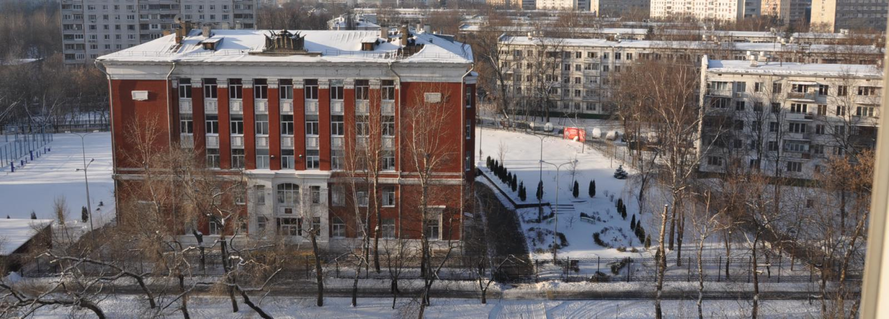
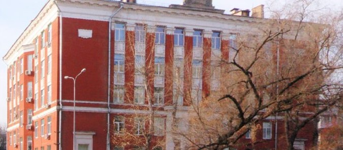

Дворец для Шандалова
Совсем недавно стало известно, что ученики 10-ых и 11-ых классов в следующем году будут учиться в школе № 1032, откуда они были переведены из Гимназии № 1505, которую ученики зачастую называют “Дворцом”. Наша расследовательская группа решила провести своё расследование о так называемом дворце и выяснить все подробности.

Нам говорили, что снять это невозможно. Да мы и сами не верили, а потом взяли и попробовали. По периметру территории дворец обнесён двухметровым забором, а попасть внутрь - нереально, особенно если вы забыли карточку, но нам это удалось.

Съёмка с дрона
В знаменитом дворце есть роскошный театр. Здесь он тоже имеется, причём по площади он ничуть не уступает оригиналу. Хозяин зачастую тут проводит концерты и балы в стиле XVIII века.

Роскошный театральный зал
Увы, обнаружить аквадискотеку нам так и не удалось, возможно она спрятана где-то в другом месте. Зато мы обнаружили фитнесс зал, который напоминает свой аналог в геленджикском дворце. Хоть он и не такой большой, но находится на открытом воздухе.
Комфортабельный театральный зал
В небезызвестном дворце есть кальянная, здесь же их целых четыре, причём на выбор есть как мужские, так и женские. Посетители здесь круглый год, а пик посещаемости приходится на большую переменную.
Мужская кальянная
Как утверждается в расследовании, помимо всего вышеперечисленного, в дворце на мысе Идокопас построен ледовый дворец. Мы долго не могли поверить, но обнаружили что и в этом красно-кирпичном дворце есть своё спортивное сооружение - крытое футбольное поле, баскетбольный и волейбольный корт в одном месте. Для удобства имеются раздевалки и даже душ.
Футбольное поле
А помните ёршики из дворца? Тут они тоже есть, вот правда не золотые, а обычные.
Золотые ёршики
Нам удалось связаться с одним из представителей данного дворца. Анонимный собеседник заявил, что Шандалову этот дворец никогда не принадлежал и не принадлежит. По его словам, это вовсе не дворец, а роскошная гостиница. Как утверждал источник, на данном месте в скором времени откроется пятизвездочный отель.
Отель "El 1505"
Григорий Борисович, пожалуйста, не выселяйте 10-ые и 11-ые классы из своего дворца, из гимназии в которой мы учимся более 5 лет. Мне кажется, что ни одна новая школа не может передать такую доброту и тепло, которые излучают стены нашей школы, годами хранящей звонки перемен, громкие возгласы и смех учеников, строгие, но правильные наставления учителей…
“Мы запомним всё, чему вы нас учили тут годами,
вы ведь показывали нам, что значит жить сердцами,
для этого нужны лишь пара ног и глаз,
и поведали как быть живым здесь и сейчас.”